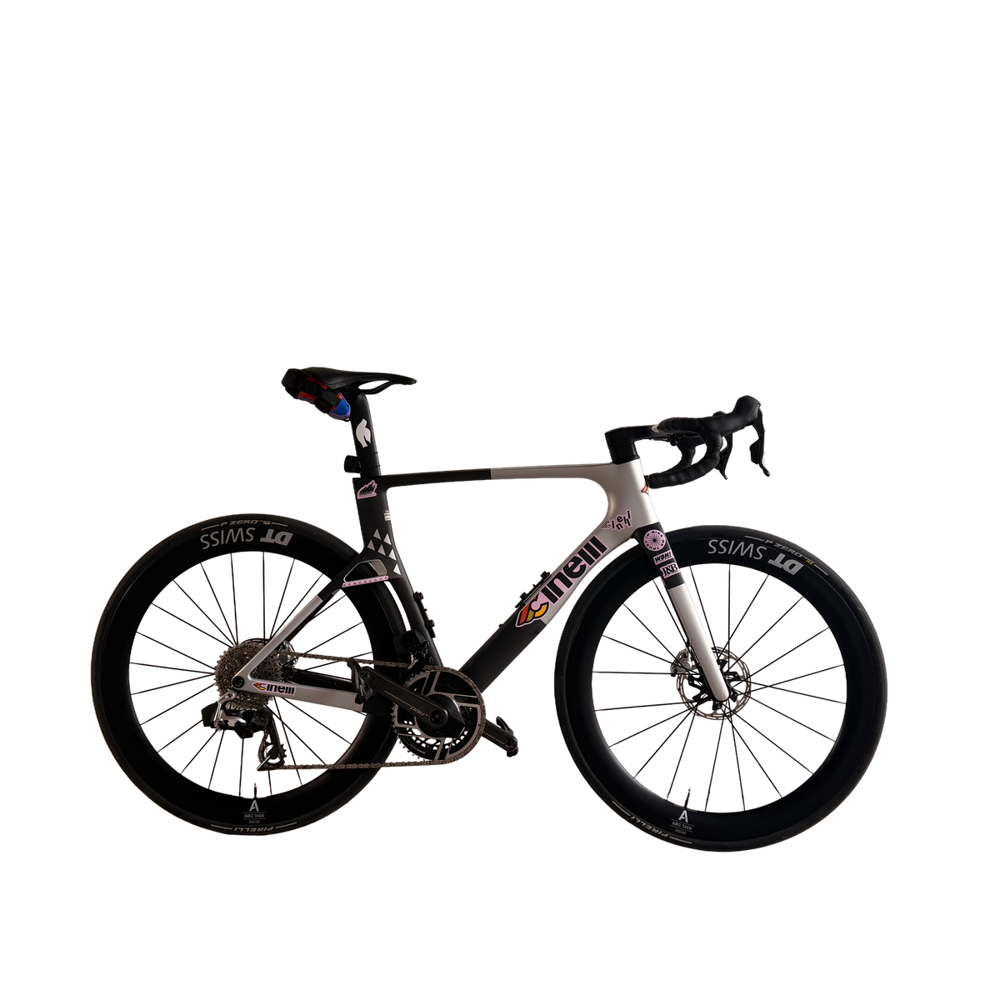

Cinelli Aeroscoop mein Aufbau

Kein Werksmodell von der Stange, sondern ein individueller Aufbau: Cinelli-Aeroscoop-Rahmen, SRAM RED AXS (aktuellste Generation) und DT-Swiss-ARC-1400-Dicut-Laufräder mit 55 mm Felgenhöhe – eine Kombination, die Cinelli werksseitig so nicht anbietet (dort laufen die RED-AXS-Modelle serienmäßig mit Fulcrum-Carbonlaufrädern).
Rahmen
Rahmengewicht 950 g (Größe M, lackiert), Gabel 370 g. Carbon-Layup aus Toray T700/T800/T1100 je nach Bereich – T700 für kontrollierte Flexibilität, T800 für Steifigkeit an kritischen Stellen, T1100 für maximale Steifigkeit. Stirnfläche 4 % kleiner als beim Vorgänger Pressure 2, maximale Reifenfreiheit 34 mm. Sitzwinkel konstant 73,5°, Kettenstreben 410 mm – unabhängig von der Rahmengröße.
Antrieb – SRAM RED AXS
Gesamtgewicht 2.548 g, 154 g leichter als der Vorgänger und aktuell die leichteste elektronische Gruppe am Markt. Kassetten-Optionen 10-28, 10-30, 10-33 oder 10-36 Zähne. Überarbeitete Hebel-/Hood-Ergonomie, verfeinerter Umwerfer, größere Keramik-Schaltrolle.
Laufräder – DT Swiss ARC 1400 Dicut 55
55 mm Felgenhöhe, Herstellerangabe ab 1.549 g pro Laufradsatz (ca. 723 g vorne / 836 g hinten). 240-Dicut-Aero-Nabe mit Ratchet-EXP-Freilauf, tubeless-ready, 22 mm innere Maulweite.
Warum dieses Bike
Die Aeroscoop wollte ich, weil Cinelli hier italienisches Heritage mit einer der modernsten Aero-Rennrad-Ausstattungen verbindet. Bei mir zuhause ist das Gelände überwiegend flach – da macht ein reinrassiger Aero-Renner für mich mehr Sinn als ein leichtes Kletter-Bike.